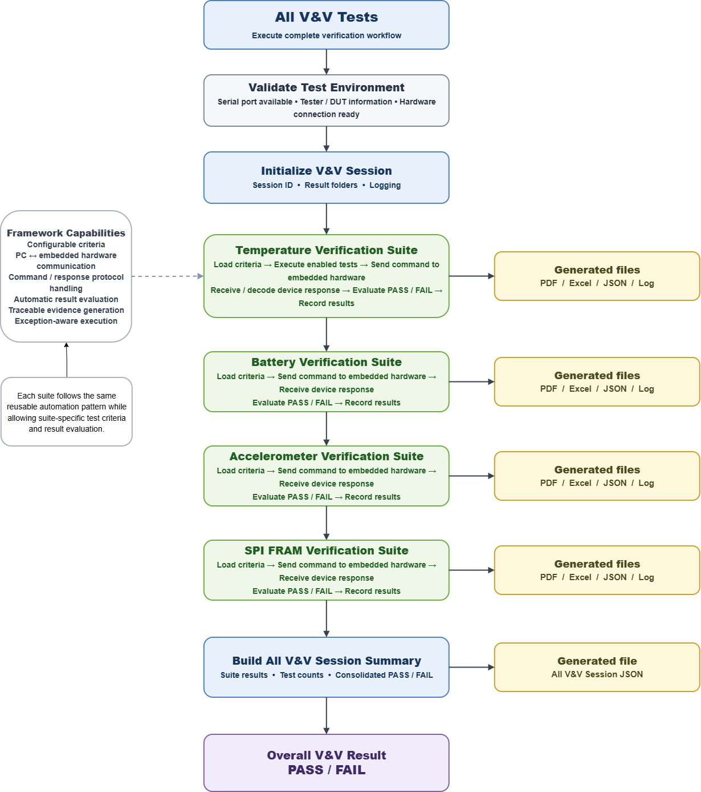
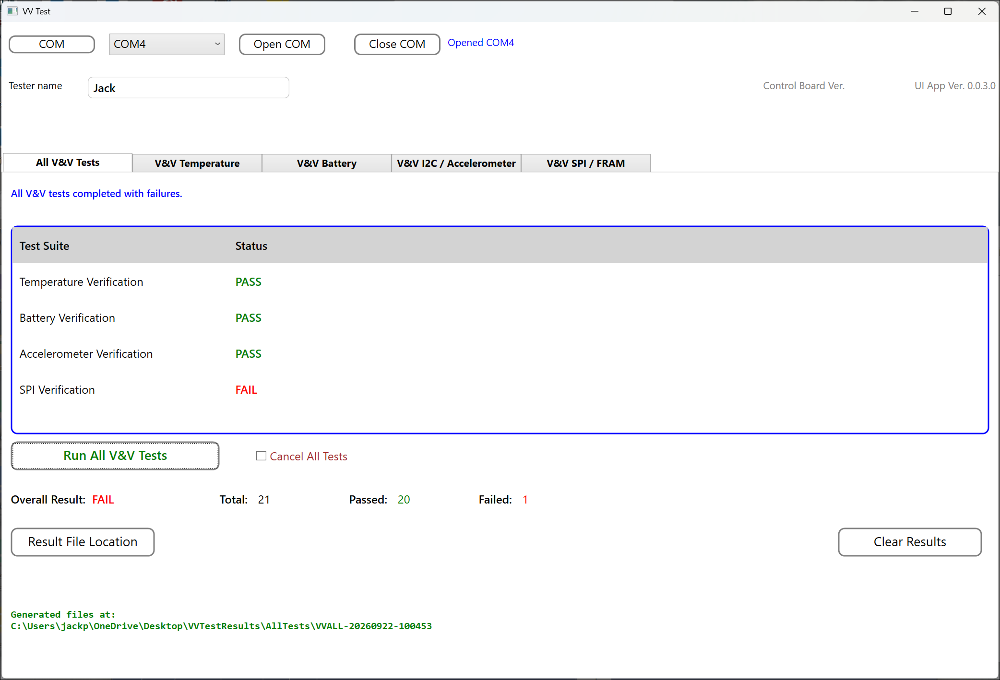

Sample V&V Reports
The V&V Automation framework automatically records test results and generates verification evidence at the completion of each test suite or V&V session.
Multiple output formats are available so results can be reviewed by engineers, archived for traceability, or processed by other software tools.
Generated Report Formats
PDF Verification Reports
Auto-generated PDF reports contain test identification, expected values, measured values, tolerances, timestamps, and PASS / FAIL results.
Select an example report:
Excel Test Results
Auto-generated Excel reports contain test identification, expected values, measured values, tolerances, timestamps, and PASS / FAIL results for engineering review and analysis.
Select an example report:
JSON Test Data
Auto-generated JSON files provide machine-readable test results for integration with other software, databases, automated analysis, and traceability systems.
Select an example:
Execution Logs
Auto-generated log files capture test execution activity and communication between the PC application and embedded device for troubleshooting and traceability.
Select an example log:
V&V Session Summary
The All V&V Tests workflow coordinates the complete verification session across the Temperature, Battery, and Accelerometer test suites. The framework manages test-environment validation, session initialization, configurable test execution, embedded-hardware communication, automatic PASS / FAIL evaluation, and verification evidence generation.
During each test suite, test criteria are loaded and the enabled test cases are executed automatically. The PC application sends test commands to the embedded hardware, receives and decodes the device responses, evaluates the measured results against the configured acceptance criteria, and records the results for traceability.

Each verification suite automatically generates PDF, Excel, JSON, and log files containing the test results and execution evidence. After all test suites have completed, the framework consolidates the suite results into a higher-level V&V Session Summary.
The session summary provides the test counts and PASS / FAIL status for each verification suite and determines the final Overall Result for the complete V&V execution. A Session JSON file is also generated to provide a machine-readable record of the complete verification session.
Example V&V Session Result
The All V&V Tests interface provides a consolidated view of the verification session, including the status of each test suite, total tests executed, passed and failed counts, and the final overall PASS / FAIL result.

Verification Traceability
The V&V Automation framework automatically captures verification evidence during each test execution, providing consistent and traceable records from individual test cases through the complete V&V session.
- Test session identifier
- Test case identifier and test name
- Execution timestamp
- Expected value or expected state
- Measured value or device response
- Acceptance criteria and tolerance
- PASS / FAIL result
- Test-suite summary
- Overall V&V session result
This automated record helps reduce manual documentation effort and provides organized verification evidence for engineering review, troubleshooting, and project traceability.
Adaptable V&V Reporting
Report content and output formats can be adapted to project-specific verification and documentation requirements. Information such as device serial number, firmware version, operator name, project name, test requirement identifiers, hardware configuration, and approval information can be included as required.
Test criteria, recorded results, and report content can also be tailored to the product under test while maintaining a consistent automated V&V workflow.
This flexibility allows the V&V Automation framework to support different embedded products and verification processes while providing consistent test execution, traceability, and automated evidence generation.